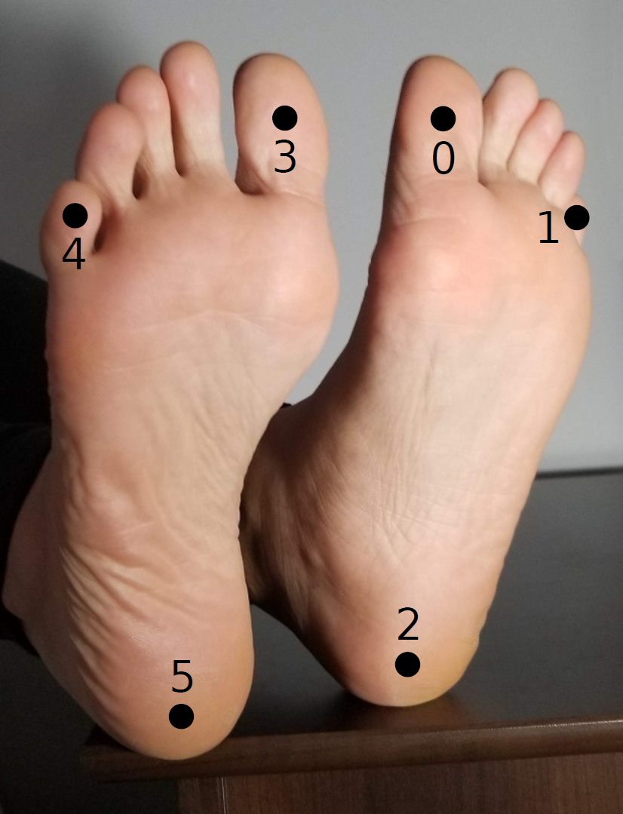

Human Foot Keypoint Dataset
Zhe Cao, Gines Hidalgo, Tomas Simon, Shih-En Wei, Yaser Sheikh
Carnegie Mellon University
Quoting OpenPose: Realtime Multi-Person 2D Pose Estimation using Part Affinity Fields
Existing human pose datasets contain limited body part types. The MPII dataset annotates ankles, knees, hips, shoulders, elbows, wrists, necks, torsos, and head tops, while COCO also includes some facial keypoints. For both of these datasets, foot annotations are limited to ankle position only. However, graphics applications such as avatar retargeting or 3D human shape reconstruction require foot keypoints such as big toe and heel. Without foot information, these approaches suffer from problems such as the candy wrapper effect, floor penetration, and foot skate. To address these issues, a small subset of foot instances out of the COCO dataset is labeled using the Clickworker platform. It is split up with 14K annotations from the COCO training set and 545 from the validation set. A total of 6 foot keypoints are labeled. We consider the 3D coordinate of the foot keypoints rather than the surface position. For instance, for the exact toe positions, we label the area between the connection of the nail and skin, and also take depth into consideration by labeling the center of the toe rather than the surface.
The foot keypoint ordering in the annotation file is as follows:|  |
|
Download
Foot Keypoint Annotations (Training: ~13.5k annotations, Validation: ~0.5k annotations) |
| Download the train2017_foot_v1.zip JSON zip file. |
| Download the val2017_foot_v1.zip JSON zip file. |
| Download the image dataset from the original body-only dataset website (in particular 2017 Train images [118K/18GB] and 2017 Val images [5K/1GB]) |
| Trained foot detector models and testing code released in OpenPose |
The JSON files follow the same standard format than that of 2017 Train/Val annotations [241MB] from the original body-only dataset website.
Results
 .
.
Citation
Please cite the following paper (arXiv link) in your publications if the dataset helps your research.
@inproceedings{cao2018openpose,author = {Zhe Cao and Gines Hidalgo and Tomas Simon and Shih-En Wei and Yaser Sheikh},
booktitle = {arXiv preprint arXiv:1812.08008},
title = {Open{P}ose: realtime multi-person 2{D} pose estimation using {P}art {A}ffinity {F}ields},
year = {2018}
}
License
The software and Foot Keypoint Annotations entitled train2017_foot_v1.zip and val2017_foot_v1.zip, as provided on this webpage, are owned by Carnegie Mellon University and are licensed under the Creative Commons Attribution 4.0 License. All rights not specifically granted are reserved. For any inquiries, please contact Scott McEvoy at mcevoy@cmu.edu or innovation@cmu.edu.